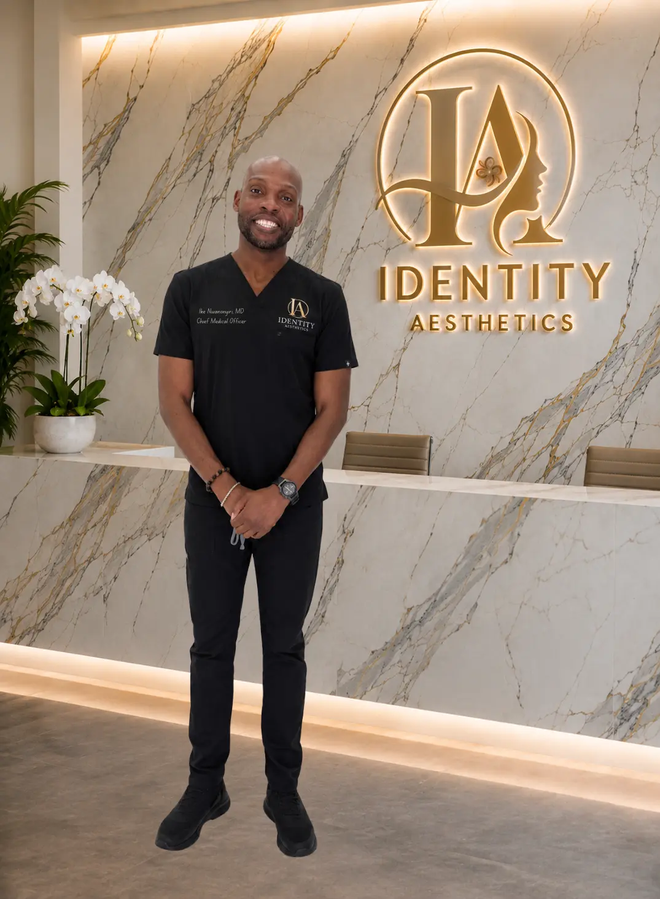

Whole-person medicine with a focus on movement, recovery and longevity.
Chief Medical Officer · Board-Certified Family Medicine Physician · Medical Reviewer
Ike Nwanonyiri, MD, is a board-certified family medicine physician and Chief Medical Officer at Identity Aesthetics. His broad primary-care background gives him a whole-person perspective on health, performance and wellness—an approach that is especially valuable when patients are considering regenerative medicine, men’s health services or a medically supervised treatment plan.
Dr. Nwanonyiri has extensive experience evaluating acute and chronic conditions, performing in-office minor procedures and caring for patients across different stages of life. He particularly enjoys working with athletes of all ages and brings a practical understanding of how movement, recovery, health history and long-term function can shape a patient’s goals.
At Identity Aesthetics, his clinical focus includes family medicine, men’s health, athlete care, sports-medicine concerns and regenerative-medicine approaches. He helps patients understand what may be appropriate, what requires further evaluation and where evidence, safety or regulatory limitations should shape the conversation. Treatment recommendations remain individualized and are made only after appropriate clinical review.
As a medical reviewer, Dr. Nwanonyiri evaluates patient education for accuracy, balanced risk language, regulatory distinctions and clear direction toward professional evaluation. His oversight helps the practice distinguish general education from individualized diagnosis and treatment.
Education and Training
- Bachelor’s Degree in BiologyUniversity of Arkansas
- Doctor of MedicineUniversity of Science, Arts and Technology Faculty of Medicine, Montserrat — 2014
- Family Medicine Internship and ResidencyUnity Health–White County Medical Center · Searcy, Arkansas
- Award and HonorBest Teaching Resident
Board Certification and Clinical Focus
- American Board of Family Medicine
- Primary and family medicine
- Men’s health
- Athlete care and sports-medicine concerns
- Regenerative-medicine approaches
- Acute and chronic condition evaluation
- In-office minor procedures
- Clinical oversight and medical-content review
Professional Memberships
- North Carolina Academy of Family Physicians
- American Medical Association
- American Academy of Family Physicians
Originally from Houston, Dr. Nwanonyiri enjoys basketball, running, hiking, barbecuing and spending time with his family. He speaks English, Spanish and Igbo.
Credential source: Education, certification, award, memberships and biographical details were reviewed against his official CaroMont Health physician profile on August 6, 2026.
Dr. Nwanonyiri offers both in-office and telehealth appointments when clinically appropriate and legally available. Services, prescribing options and visit setting depend on the patient’s needs, physical location and applicable requirements.
Begin with an individualized conversation
Meet with Dr. Nwanonyiri in office or through telehealth when clinically appropriate and legally available in Texas, North Carolina or South Carolina.